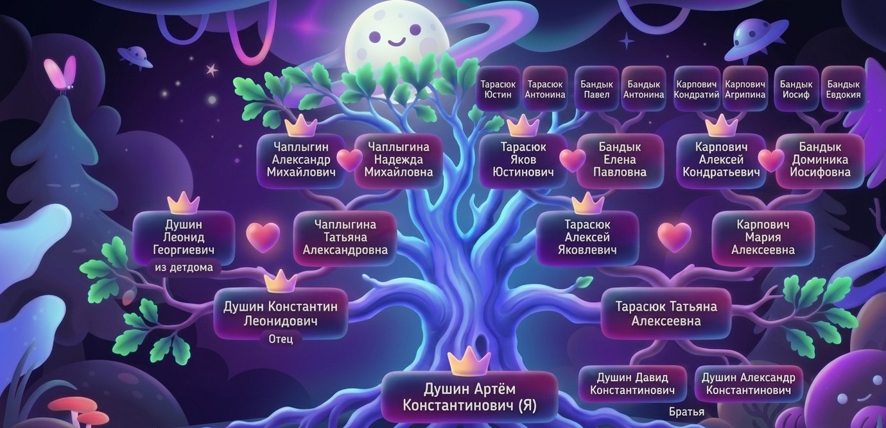

Родовое Дерево
Связь поколений Душиных, Тарасюков, Карповичей, Бандыков и Чаплыгиных

Род Душиных
Пять родов Душины, Чаплыгины, Тарасюки, Карповичи, Бандыки сошлись в одной точке, создав уникальную историю нашей семьи, уходящую корнями в Подольскую губернию XIX века.
Подольские корни
Юстин и Антонина Тарасюк. Кондратий и Агрипина Карпович, братья Павел и Иосиф Бандык.
Таинственные Чаплыгины
Александр Михайлович Чаплыгин, пропавший без вести на войне, и его дочь Татьяна.
Душины без прошлого
Леонид Георгиевич Душин из детдома, давший нам фамилию и начавший новую ветвь.